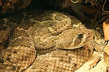
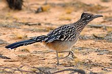
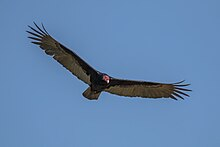

The western diamondback (Crotalus atrox) is a member of the rattlesnake species and is commonly found throughout the Southwest United States and the Northern regions of Mexico. Rattlesnakes are venomous and get their name from the rattling sound their tail makes when they feel threatened. Rattlesnakes will eat small mammals, birds, lizards, amphibians, fish, and mice. They are also responsible for many if not most snakebite fatalities in the United States as well as in Northern Mexico.

The greater roadrunner (Geococcyx californianus) is a long-legged bird native to the Southern United States. Roadrunners get their name from their ability to run up to 20 miles per hour. Roadrunners usually live solitary lives until they find a mate that they will stay with for life. They use their speed to help catch their prey which consists of small insects, spiders, or even small mammals. Because roadrunners live mostly in desert regions, they have evolved biological adaptations to regulate their body temperature and reduce dehydration.

The turkey vulture (Cathartes aura), spans most of America though they are commonly found in hot dry areas where open areas are very close to woodlands. This means that most of Southern California is the perfect climate for them. Turkey vultures are scavengers and feed mostly on animal carcasses that they find using their strong eyes and sense of smell. They also live in large community groups and usually raise two chicks a year.

Tip: Click on the name of an animal to go to its wikipedia page!